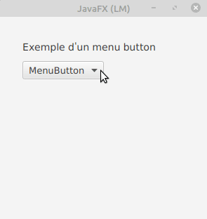
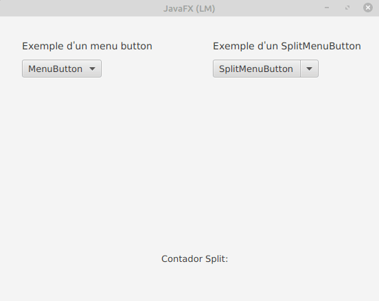

El botó menuButton quan es pressiona mostra un menú contextual que mostra un conjunt d’elements i l’usuari pot seleccionar qualsevol element. En general, conté diversos elements de menú i l’usuari pot seleccionar com a màxim un element de menú alhora.
Quan els usuaris fan clic en MenuButton, es mostrarà un menú. Els elements del menú poden ser MunuItem, CheckMenuItem, RadioMenuItem o SeparatorMenuItem. I pot manejar esdeveniments quan els usuaris fan clic en els elements
Els constructors de la classe MenuButton són:
Mètodes d’ús comú:
Els següents programes il·lustren la classe MenuButton:
Programa per a crear un MenuButton i agregar-li MenuItems: Es crearà un MenuButton amb el nom m i s’afegiran 3 menuitems m1, m2, m3 al menuButton m. La barra de menú es crearà dins d’una escena, que al seu torn s’allotjarà dins d’un escenari.

Un control lliscant és un control en JavaFX que s’utilitza per a mostrar un rang continu o discret d’opcions numèriques vàlides i permet a l’usuari interactuar amb el control. Un control lliscant es representa com una barra vertical o horitzontal amb una perilla que l’usuari pot lliscar per a indicar el valor desitjat. Un control lliscant també pot tindre marques i etiquetes per a indicar els intervals al llarg de la barra. Les tres variables fonamentals del control lliscant són min, max i value. El valor sempre ha de ser un número dins del rang definit per min i max. min sempre ha de ser menor que max. min per defecte és 0, mentre que max per defecte és 100.
Constructors de la classe:
